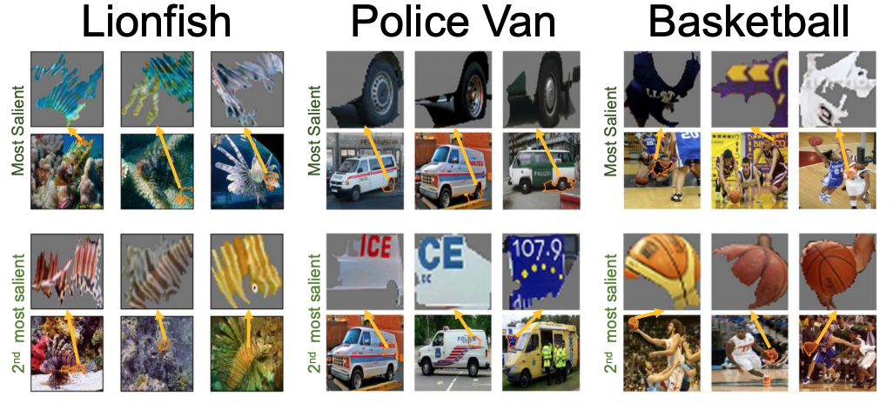
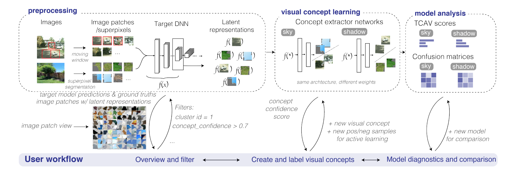
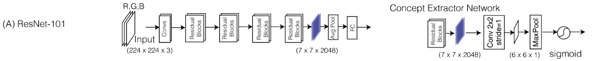
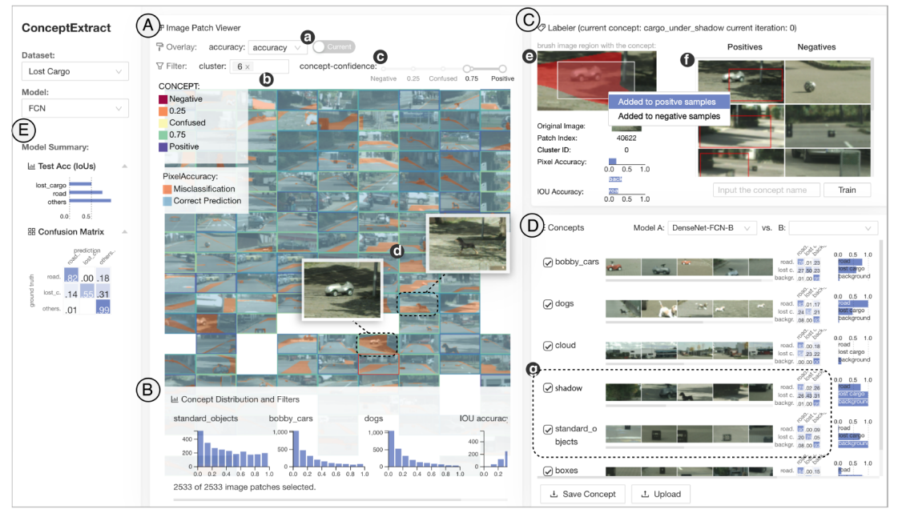
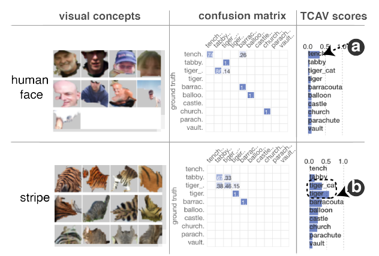

作者
Zhenge Zhao1, Panpan Xu2, Carlos Scheidegger1, Liu Ren3
本文是 1University of Arizona, 2Amazon AWS AI 和 3Bosch Research North America 共同合作的工作。
背景
随着深度学习的不断发展，模型越来越复杂，开发人员不再只是关注模型的准确性，逐渐开始关注模型可解释性。模型可解释性的好处体现在两个方面，第一，开发人员可以仔细检查机器学习模型做出的决策，提升模型决策的可信度；第二，提升模型可解释性可以帮助模型优化。模型可解释性是一个很大的课题，本文将问题聚焦在事后解释（Post-hoc Explanations）与基于概念的解释（Concept-based Explanations）。
基于概念的解释中的概念（concept）指的是比单个特征、像素、字符等更容易被人类理解的单元。概念具有三个特征：
- 有意义：一个概念的例子本身在语义上是有意义的。例如，在图像数据的情况下，单个像素可能不满足此属性，而包含纹理概念或对象部分概念的一组像素（一个图像片段）是有意义的。
- 连贯性：一个概念的例子应该在感知上彼此相似，而与其他概念的例子不同。“黑白条纹”概念的例子都与黑白条纹相似。
- 重要性：如果一个概念的存在对于该类中的样本的真实预测是必要的，那么该概念对于该类的预测是“重要的”。例如，在图像数据的情况下，预测存在的对象是必要的，而背景颜色则不是。
下图中描绘了每个类别的前 2 个重要概念的三个随机选择的示例（每个示例都显示在其分割的原始图像上方）。例如，使用这个结果，我们可以看到网络使用车的轮胎和警察标志对警车进行分类。

现有工作
- TCAV (Testing with Concept Activation Vectors) 提出了 TCAV score 来定量解释每个概念对每个模型预测类的相对重要性。
- ACE 是 TCAV 进一步的工作，旨在了解模型用于预测不同图像标签的信号。它们为训练模型中的预测（例如预测为汽车）生成视觉概念（例如车轮、玻璃）的重要性度量。但是，自动聚类方法生成的概念可能与人类概念不匹配。
贡献
- 可视分析框架
支持基于人在循环、主动学习的方法来提取用于模型解释的视觉概念，并识别对模型性能产生负面影响的视觉概念。 - 原型系统
实现了我们提出的人在回路工作流程，具有可扩展的图像补丁探索、视觉提示和交互式过滤器，用于主动学习以及一组丰富的模型诊断和比较分析可视化。 - 两个案例研究
证明了将 ConceptExtract 用于各种机器学习任务和数据集的价值。 - 定量实验
表明 ConceptExtract 比传统主动学习更快地产生概念，并且这些概念可以帮助开发数据增强策略以提高模型性能。
预备知识
主动学习
不使用主动学习，意味着从样本中随机选择或者使用一些人工规则的方法来提供待标记的样本供人工进行标记，标注成本相对大。而使用主动学习，可以自动获取“难”分类的样本数据，然后人工确认和审核，再投入到训练模型中进行训练，这个过程可以降低标注成本。
困难负样本
困难负样本指容易被网络预测为正样本的样本，即假正例（false positive）。训练困难负样本对提升网络的分类性能具有极大帮助，相当于一个错题集。
概念注释
概念注释与分类标签不同，一个图像可能允许多个概念注释。概念注释不用于任务训练网络，可以为模型解释提供必要的基础。
图像块(Image patch)
图像块是介于像素级别和图像级别的区域块。使用固定窗口大小或超像素分割算法可将图像分割成块。
任务分析
- 总结模型行为
- 浏览和探索图像补丁
- 训练和评估概念提取模型
- 分析视觉概念如何影响模型决策
- 比较不同的模型
工作流程

上图中展示了本文的工作流程，分为预处理阶段、视觉概念学习阶段和模型分析三个阶段。预处理阶段分为三步：1. 图像分割成块。2. 调整图像块大小喂给目标模型。3. 提取出目标模型选定层的潜在表示。视觉概念学习阶段，在潜在表示之上使用概念提取器网络来学习人类可理解的概念并检索包含这些概念的图像块以进行模型分析。这一阶段训练具有相同架构但不同权重的单个网络来识别不同的视觉概念。其主动学习网络结构非常简单，包含一个卷积层、一个最大池化层和 sigmoid 函数（获得介于 0 和 1 之间的概念置信度分数，以预测图像块是否包含指定的视觉概念），网络结构示意图如下图所示。

模型分析阶段，分析视觉概念和相应的图像块；使用 TCAV 分数和混淆矩阵进行模型解释、诊断和比较；可视化显示细粒度分析，包括每个视觉概念如何影响模型，以及模型在包含不同视觉概念的图像上的表现如何。
系统介绍

界面分为几个大的模块：A. 图像块视图 C. 训练视图 D.模型分析视图。B E 视图提供信息的概览。
图像块视图
该视图提供了图像块的概览，以帮助用户快速探索数据集合并识别有趣的视觉概念。视图使用 t-SNE 布局图像块，这样做的问题是图像块重叠、视觉混乱。本文提出的解决方案是去杂乱算法。算法分为以下几步：1. 将画布区域划分为具有相同大小矩形的网格。2. 随机化图像块序列。3. 对于每个图像块，找到包含 2D 坐标的网格单元。如果网格为空，我们在网格上绘制图像块。如果网格已经被占用，布局算法将搜索最近的邻居网格来填充；当屏幕上没有可用的空网格时，图像补丁将被暂时隐藏。放大操作将增加可用网格单元的数量。
视图顶部的控制面板，允许用户在图像块上叠加附加信息并过滤数据。当用户第一次探索数据时，可能不知道从哪里开始研究。 “集群”过滤器（b）为用户提供了在使用 k-means 等算法预先计算的选定集群中仅绘制图像块的选项。用户还可以在图像块上选择颜色叠加或边框高光，以显示真实情况、模型预测和模型精度等信息。范围滑块可以帮助用户根据当前正在训练的概念的每个图像块的概念置信度分数有效地过滤数据。
训练视图
视图分为两部分，e: 用户分配概念标签的图像块的详细信息和交互区域。f: 显示所选图像及其训练状态的训练样本列表。
从图像块视图中选择的图像块将被放大，并显示图像块的来源等相关信息。用户可以直接将不包含该概念的块添加到负训练集中。要添加正样本，用户要么在包含概念的图像上裁剪一个矩形并丢弃其余像素，要么直接选择整个图像块作为正样本。所有选定的正样本负样本将显示在训练样本列表中。
模型分析视图
模型分析视图支持细粒度的模型解释、诊断和比较。视图中显示概念的记录，如下图所示，
条形图显示每个视觉概念的 TCAV 分数，每个条形的长度表示该概念对预测特定类别的重要性。
为了衡量正在分析的模型在概念方面的潜在弱点，本文根据概念置信度得分为每个概念选择前 50 个图像块，找到这些图像块的原始图像并将我们的目标模型的预测与使用混淆矩阵的真实情况。混淆矩阵中的每一行代表真实类别，每一列代表预测的类别。矩阵对角线上的值表示每个类中正确分类的数据样本的比例。本文使用顺序颜色来编码从 0 到 1 的比例。通过混淆矩阵，用户可以分析图像中某个视觉概念的存在是否会导致更多的模型错误。除此之外，混淆矩阵可以用于比较不同的模型。对于从列表中选择的两个模型，我们为每个视觉概念计算它们的混淆矩阵，然后直接计算它们之间的差异，其中红色表示矩阵中的负值，蓝色表示正值。如果第二个模型比第一个模型具有更好的性能，则对角线条目应在矩阵中显示更多正值（蓝色），反之亦然。例如，在下图中，我们在包含视觉概念天空的图像上比较了 DenseNet 和 ResNet。由于对角线上有更多红色条目，我们可以得出结论，DenseNet 在这组图像上的性能更差。这种比较揭示了每个模型的优势和劣势，并有助于确定使用模型集成来提高预测准确性的机会。
评估——使用场景

从 TCAV 分数中，我们可以确定人脸概念与预测 tench 的类型高度相关。
基于 TCAV 分数我们还可以观察到，虎猫、老虎和虎斑猫这三个频率混淆类都使用条纹作为视觉概念进行分类。混淆矩阵显示，在包含条纹的图像上，模型经常在三种猫科动物中出错。
评估——定量实验
为了研究人类知识是否真的可以产生更好的概念提取器，建立了一个基线模型。
基线模型模仿标准的主动学习方法，其中最混乱的图像将被标记并添加到下一次训练阶段。
上限模型，使用所有图像块作为训练数据并在单个阶段训练模型。
从下图中可以看到“bobby car”是一个更难提取的概念。即使使用所有数据，50 之后的顶部选择也低于 0.5。所有主动学习模型的表现都优于基线模型。
为了研究不同潜在表示的影响，本文使用 VGG-16 模型进行实验，通过该模型发送图像块并提取一组新的深度嵌入。
从下图的结果中可以看出这个 VGG-16 模型的分类任务的性能相当不错。
这个实验还验证了即使我们的概念提取网络的架构非常简单，它仍然可以从图像块中提取概念。它还表明，我们可以将提取网络无法提取概念与潜在空间中任务模型表示的质量联系起来。
✉️ zjuvis@cad.zju.edu.cn